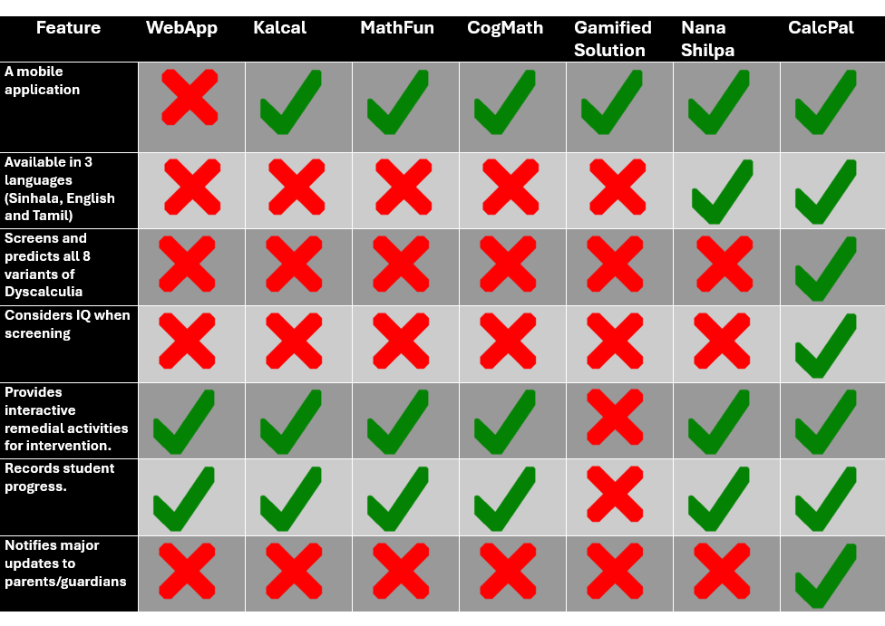

Literature Survey
Literature Survey
A comprehensive lierature review was done to gather information about previous research done in the field of Specific Learning Diasbilities specially Dyscalculia. A summary of the pros and cons of the researches when compared with each other and the CalcPal application is given below.
